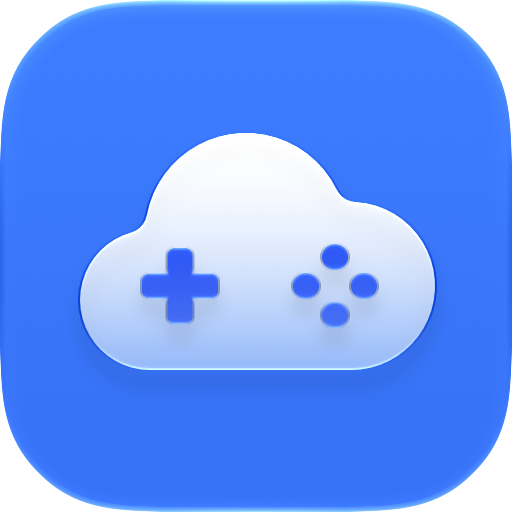

Privacy Policy
Kumyna for Apple TV, iPhone, iPad and Mac
Privacy Policy
Last updated: 10 November 2026
Kumyna ("the app") is a web browser for cloud gaming on iPhone, iPad and Mac, with a companion app on Apple TV. It is published by Andrea Soda (Sokit Studio), who is the data controller for the processing described here (contact: privacy@sokitstudio.com). It is not affiliated with, endorsed or sponsored by Amazon, NVIDIA or Microsoft.
Data the developer collects
None. The app has no analytics, advertising, tracking or crash-reporting services, and it never sends data to the developer.
Websites you open
On iPhone, iPad and Mac the app shows the websites you choose, such as cloud gaming services. You sign in on those websites; the app never sees or stores your passwords. Cookies and website data are kept on your device by the system web engine, and each website processes your data under its own privacy policy. "Sign Out of All Websites" in the app removes this data. Camera and microphone are used only if a website you open asks for them, and only after you allow it.
Apple TV companion
When you pair an iPhone or iPad with the Apple TV, the two devices find each other on your local network and exchange a random key, kept in their Keychain. When you send a game to the Apple TV, your iPhone or iPad passes it the game identifier and the session of the service you are signed in to (today Amazon Luna). The Apple TV uses that session only to start that game with that service, keeps it in memory only and never stores it. The Apple TV keeps a local list of the game titles you played there, which you can clear in its Settings.
Data stored on your device
- Preferences and bookmarks, stored locally.
- Pairing keys between your devices, in the Keychain.
- Recently played list on the Apple TV.
- Diagnostic logs: technical events such as connection state and errors, kept on the device only, limited to the last 10 sessions, never uploaded. They contain no passwords, cookies or tokens.
Deleting the app removes this data from the device, except Keychain items, which the system may keep.
Purchases
Kumyna Premium is sold through Apple's In-App Purchase. Apple processes the payment under its own privacy policy (apple.com/legal/privacy); the app checks purchases on the device and the developer only receives aggregated sales reports from Apple that don't identify you.
Support requests
If you write to the developer, your email address and message are used only to answer you (legal basis: your request, art. 6(1)(b) and (f) GDPR) and are deleted within 24 months of the last exchange.
This website
This site uses no cookies, analytics or scripts. It is hosted by GitHub Pages: GitHub may log visitors' IP addresses for security, under its privacy statement.
Your rights
You can ask the developer for access to, correction or deletion of your data, restriction of or objection to its processing, and portability, at the address above. You can also lodge a complaint with your data protection authority; in Italy, the Garante per la protezione dei dati personali.
Children
The app is not directed at children and does not knowingly collect data from anyone.
Changes and contact
Changes to this policy are published on this page. Questions: privacy@sokitstudio.com
Informativa sulla privacy
Ultimo aggiornamento: 10 novembre 2026
Kumyna ("l'app") è un browser web per il cloud gaming su iPhone, iPad e Mac, con un'app di accompagnamento per Apple TV. È pubblicata da Andrea Soda (Sokit Studio), titolare dei trattamenti descritti qui (contatto: privacy@sokitstudio.com). Non è affiliata ad Amazon, NVIDIA o Microsoft né da loro approvata o sponsorizzata.
Dati raccolti dallo sviluppatore
Nessuno. L'app non contiene servizi di analisi, pubblicità, tracciamento o segnalazione dei crash, e non invia dati allo sviluppatore.
Siti che apri
Su iPhone, iPad e Mac l'app mostra i siti che scegli, per esempio i servizi di cloud gaming. Accedi su quei siti; l'app non vede né conserva le tue password. Cookie e dati dei siti restano sul dispositivo, gestiti dal motore web del sistema, e ogni sito tratta i tuoi dati secondo la propria informativa. "Esci da tutti i siti" nell'app cancella questi dati. Fotocamera e microfono si usano solo se un sito che apri li chiede, e solo dopo il tuo consenso.
App per Apple TV
Quando abbini un iPhone o un iPad all'Apple TV, i due dispositivi si trovano sulla tua rete locale e si scambiano una chiave casuale, conservata nel Portachiavi. Quando mandi un gioco all'Apple TV, l'iPhone o l'iPad le passa l'identificativo del gioco e la sessione del servizio su cui hai fatto l'accesso (oggi Amazon Luna). L'Apple TV usa quella sessione solo per avviare quel gioco con quel servizio, la tiene solo in memoria e non la salva. L'Apple TV conserva in locale l'elenco dei titoli giocati, che puoi cancellare nelle sue Impostazioni.
Dati conservati sul dispositivo
- Preferenze e segnalibri, salvati in locale.
- Chiavi di abbinamento tra i tuoi dispositivi, nel Portachiavi.
- Elenco dei giochi recenti sull'Apple TV.
- Log diagnostici: eventi tecnici come stato della connessione ed errori, conservati solo sul dispositivo, limitati alle ultime 10 sessioni e mai inviati. Non contengono password, cookie o token.
Eliminando l'app questi dati vengono rimossi dal dispositivo, tranne quelli nel Portachiavi, che il sistema può conservare.
Acquisti
Kumyna Premium si acquista con gli acquisti in-app di Apple. Apple tratta il pagamento secondo la propria informativa (apple.com/it/legal/privacy); l'app verifica gli acquisti sul dispositivo e lo sviluppatore riceve da Apple solo resoconti di vendita aggregati, che non ti identificano.
Richieste di assistenza
Se scrivi allo sviluppatore, il tuo indirizzo email e il messaggio servono solo a risponderti (base giuridica: la tua richiesta, art. 6, par. 1, lett. b e f del GDPR) e vengono cancellati entro 24 mesi dall'ultimo scambio.
Questo sito
Questo sito non usa cookie, statistiche né script. È ospitato da GitHub Pages: GitHub può registrare l'indirizzo IP dei visitatori per motivi di sicurezza, secondo la propria informativa.
I tuoi diritti
Puoi chiedere allo sviluppatore, all'indirizzo sopra, l'accesso ai tuoi dati, la rettifica, la cancellazione, la limitazione del trattamento, l'opposizione e la portabilità. Puoi anche proporre reclamo al Garante per la protezione dei dati personali.
Minori
L'app non è rivolta ai minori e non raccoglie consapevolmente dati di nessuno.
Modifiche e contatti
Le modifiche a questa informativa vengono pubblicate su questa pagina. Domande: privacy@sokitstudio.com